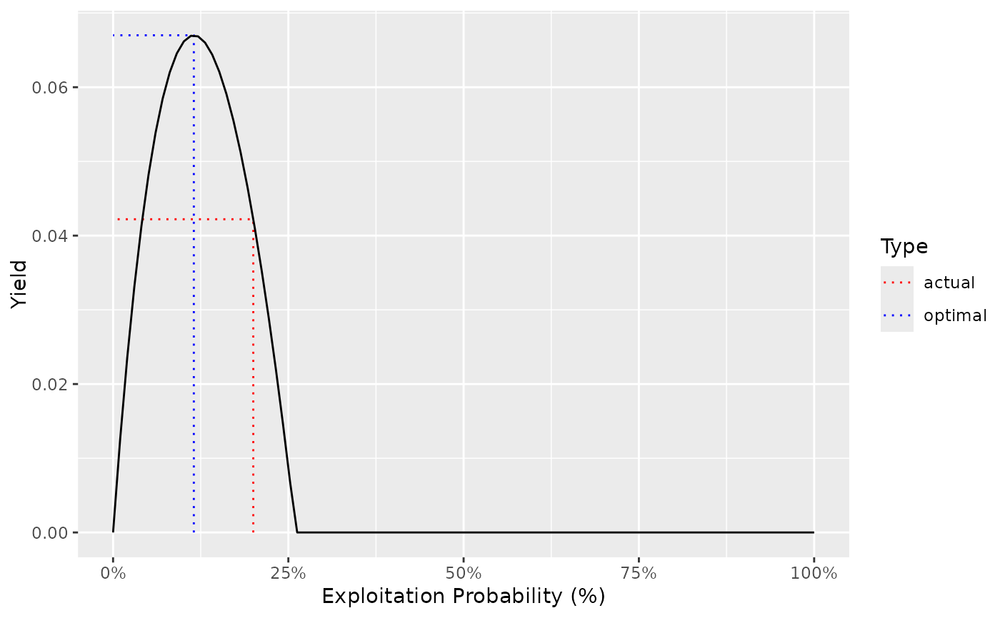

Plots the 'Yield', 'Age', 'Length', 'Weight', 'Effort', or 'YPUE' by the annual interval capture/exploitation probability.
Usage
ypr_plot_yield(object, ...)
# Default S3 method
ypr_plot_yield(
object,
y = "Yield",
pi = seq(0, 1, length.out = 100),
Ly = 0,
harvest = TRUE,
biomass = FALSE,
u = harvest,
plot_values = TRUE,
...
)
# S3 method for class 'ypr_populations'
ypr_plot_yield(
object,
y = "Yield",
pi = seq(0, 1, length.out = 100),
Ly = 0,
harvest = TRUE,
biomass = FALSE,
u = harvest,
plot_values = TRUE,
...
)Arguments
- object
The population or populations.
- ...
Unused parameters.
- y
A string of the term on the y-axis.
- pi
A vector of probabilities of capture to calculate the yield for.
- Ly
The minimum length (trophy) fish to consider when calculating the yield (cm).
- harvest
A flag specifying whether to calculate the yield for harvested fish or captures.
- biomass
A flag specifying whether to calculate the yield in terms of the biomass versus number of individuals.
- u
A flag specifying whether to plot the exploitation rate as opposed to the capture rate.
- plot_values
A flag specifying whether to plot the actual and optimal values.
Methods (by class)
ypr_plot_yield(default): Plot Yield by Captureypr_plot_yield(ypr_populations): Plot Yield by Capture
See also
Other populations:
as_ypr_populations(),
chilliwack_bt_05,
ypr_populations_expand(),
ypr_populations(),
ypr_tabulate_sr(),
ypr_tabulate_yields(),
ypr_tabulate_yield()
Other yield:
ypr_tabulate_yield(),
ypr_yields(),
ypr_yield()
Other plot:
ypr_plot_biomass(),
ypr_plot_fish(),
ypr_plot_schedule(),
ypr_plot_sr()
Examples
if (FALSE) { # \dontrun{
ypr_plot_yield(ypr_populations(
Rk = c(2.5, 4.6),
Llo = c(0, 60)
),
plot_values = FALSE
) +
ggplot2::facet_wrap(~Llo) +
ggplot2::aes_string(group = "Rk", color = "Rk") +
ggplot2::scale_color_manual(values = c("black", "blue"))
ypr_plot_yield(ypr_populations(Rk = c(2.5, 4.6), Llo = c(0, 60))) +
ggplot2::facet_grid(Rk ~ Llo)
} # }
ypr_plot_yield(ypr_population())
